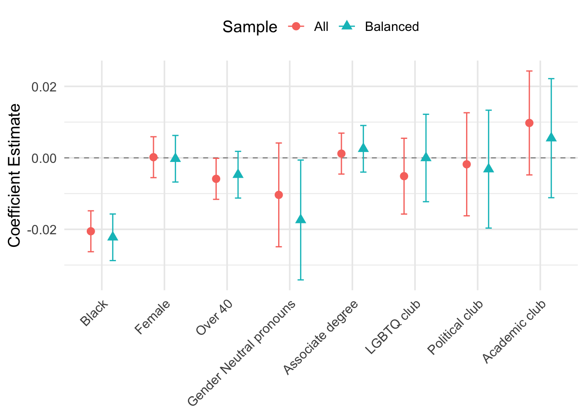

rm(list = ls())
# hide warnings
options(warn = -1)
suppressPackageStartupMessages(library(ggplot2))
suppressPackageStartupMessages(library(tidyverse))
suppressPackageStartupMessages(library(dplyr))
suppressPackageStartupMessages(library(stargazer))
suppressPackageStartupMessages(library(readxl))
suppressPackageStartupMessages(library(fixest))
suppressPackageStartupMessages(library(usmap))
suppressPackageStartupMessages(library(lfe))
suppressPackageStartupMessages(library(lmtest))
suppressPackageStartupMessages(library(sandwich))
suppressPackageStartupMessages(library(multiwayvcov))
suppressPackageStartupMessages(library(here))
suppressPackageStartupMessages(library(gtsummary))
suppressPackageStartupMessages(library(htmltools))
suppressPackageStartupMessages(library(broom))
suppressPackageStartupMessages(library(stringr))
data <- readRDS(here::here("dataset/cleaned_data.rds"))Analysis
Here we provide a detailed analysis using more sophisticated statistics techniques.

This comes from the file analysis.qmd.
Code Reference:
- Systemic Discrimination Among Large U.S. Employers
- R Markdown: The Definitive Guide
- R for Data Science
- R Markdown Cookbook
- R Markdown Reference Guide
- R Markdown Cheat Sheet
- gtsummary Package
Loading data
Motivation
Despite decades of regulatory and legal efforts to eliminate hiring discrimination, numerous field experiments continue to document persistent gaps in employer callback rates by race. In the study by Rose et al. (2022), the large scale fake resume experiment among the Fortune 500 firms in the US enables us to investigate the extent of taste based discrimination in hiring practices.
In a nutshell, the study sends fake resumes with randomly assigned characteristics to entry level positions among large U.S employers. This is an example of how a sample of resumes looks like:

Note: sourced from Figure A1: Examples of applicant resumes in the Rose et al. (2022) paper.
Research Questions
There is a famous saying:
Correlation does not imply causation.
This is especially true when it comes to the dialogue of racial disparity from the data-driven point of view. In the previous correlation based analysis, the discrimination gap may be mis-specified due to omitted variable bias (OVB). For instance, instead of taste-based discrimination, the labor market outcome inequality may be driven by different level of educational attainment, work experience, or other factors that are not controlled for.
This analysis leverages the powerful experimental data and codes from the Rose et al. (2022) paper to estimate the causal impact of being Black on the probability of receiving a callback.
The analysis is based on the following research questions:
- Does tasted based discrimination cause differential labor market outcome in the U.S?
- If so, how large is the magnitude?
- Is there evidence of intersectional heterogeneity—that is, does the magnitude of the Black callback penalty vary by another trait?
- If so, how large is the magnitude?
- Do firm‑ or month‑level shocks attenuate or amplify measured discrimination?
Summary Statistics
data2 <- data %>%
filter(balanced >= 0) %>%
mutate(
balanced_group = if_else(balanced >= 1, "Balanced", "All Firms"),
race = if_else(black == 1, "Black", "White"),
subgroup = paste(balanced_group, race, sep = " - ")
)
tbl <- data2 %>%
tbl_summary(
by = subgroup,
include = c(cb, call_cb, email_cb, text_cb), # select variables to summarize
missing = "ifany", # do not list missing data separately
statistic = list(all_continuous() ~ "{n} / {mean} / {sd} / {median}/ {p25}/ {p75}"),
) %>%
modify_header(
label = "**Variable**",
stat_by = "**N / Mean / SD**"
)
tbl| Variable | All Firms - Black N = 9,1411 |
All Firms - White N = 9,1341 |
Balanced - Black N = 32,6651 |
Balanced - White N = 32,7031 |
|---|---|---|---|---|
| Any contact | 1,972 (22%) | 2,103 (23%) | 7,647 (23%) | 8,380 (26%) |
| Any voicemail contact | 1,246 (14%) | 1,383 (15%) | 5,410 (17%) | 6,052 (19%) |
| Any email contact | 256 (2.8%) | 263 (2.9%) | 1,357 (4.2%) | 1,414 (4.3%) |
| Any text message contact | 470 (5.1%) | 457 (5.0%) | 880 (2.7%) | 914 (2.8%) |
| 1 n (%) | ||||
Descriptive Evidence by Applicants First Name
df <- data
ols <- felm(cb ~ black + white - 1|0|0|job_id, data = df)
ols2 <- felm(cb ~ factor(firstname) - 1|0|0|job_id, data = df)
coef <- as.data.frame(summary(ols2)$coefficients)
coef <- coef %>% rownames_to_column(var='coef') %>%
extract(coef, "firstname", "\\(firstname\\)([A-Za-z]+)", remove=TRUE)
coef <- df %>% select(race,gender,firstname) %>% distinct %>%
right_join(coef, by='firstname') %>% arrange(race,gender,firstname) %>%
mutate(order=row_number())
coef[,1:3]<- lapply(coef[, 1:3], as.factor)
coef <- coef %>% mutate("Race and gender"=case_when(
race == "Black" & gender == "Female" ~ "Black, female",
race == "Black" & gender == "Male" ~ "Black, male",
race == "White" & gender == "Female" ~ "White, female",
race == "White" & gender == "Male" ~ "White, male"))
plot_A3 <- ggplot(data = coef,
aes(x = reorder(factor(firstname), order), y = Estimate, fill = `Race and gender`)) +
geom_bar(stat = 'identity', alpha = .3) +
theme_minimal() +
theme(axis.text.x = element_text(angle = 90, vjust = 0.5, hjust = 1)) +
labs(
x = "Applicant first name",
y = "Mean 30-day callback rate",
fill = "Race and gender"
) +
geom_segment(aes(x = 1, y = coef(ols)['black'], xend = 38, yend = coef(ols)['black']),
show.legend = FALSE, color = "#F8766D") +
geom_segment(aes(x = 39, y = coef(ols)['white'], xend = 76, yend = coef(ols)['white']),
show.legend = FALSE, color = "#00BFCF")
print(plot_A3, height = 5, width = 8)
This figure shows mean contact rates by applicant first name, organized by race and gender group. The horizontal bars show race group mean contact rates.
Effect of Taste Based Discrimination on Contact Rates
Due to the nature of experimental data, we are able to estimate the causal effect of large employers’ taste based discrimination on applicant labor market outcomes.
Model Specification
The code estimates the causal effect of being Black on the probability of receiving a callback, controlling for a vector of other resume characteristics. Formally, two specifications:
- Linear probability model (OLS):
- with controls for all sample
- with controls for balanced sample
- two-way fixed effects for all sample
- two-way fixed effects for balanced sample
- Logistic regression
- with controls for all sample
- with controls for balanced sample
data <- data %>%
mutate(
submitted_date = as.Date(submitted_date)
) %>%
mutate(
first_day_month = floor_date(submitted_date, unit = "month")
) %>%
mutate(
wday_first = wday(first_day_month, week_start = 1),
Monday_of_month = first_day_month + days((8 - wday_first) %% 7)
) %>%
arrange(submitted_date) %>%
mutate(
num_month = dense_rank(Monday_of_month)
) %>%
select(-first_day_month, -wday_first)
data_all <- data %>% filter(balanced >= 0) %>%
mutate(wave = factor(wave),
region4 = factor(region4))
data_bal <- data %>% filter(balanced >= 1) %>%
mutate(wave = factor(wave),
region4 = factor(region4))
reg_formula <- as.formula("cb ~ black + female + over40 + political_club + academic_club +
lgbtq_club + same_gender_pronouns + gender_neutral_pronouns +
associates + wave + region4")
# Linear Probability Model (LPM)
fit_lpm_all <- lm(reg_formula, data = data_all)
# Clustered standard errors by job_id
cl_vcov_all <- cluster.vcov(fit_lpm_all, data_all$job_id)
lpm_all_coefs <- coeftest(fit_lpm_all, vcov = cl_vcov_all)
# (Two way LPM) for all sample
fit_lpm_all_lm_fe <- lm(
cb ~ black + factor(firm_id) + factor(num_month)
, data = data_all
)
cl_vcov_fe_all <- cluster.vcov(fit_lpm_all_lm_fe, data_all$job_id)
lpm_all_fe_coefs <- coeftest(fit_lpm_all_lm_fe, vcov = cl_vcov_fe_all)
# Logit Model for all firms
fit_logit_all <- glm(reg_formula, data = data_all, family = binomial(link = "logit"))
cl_vcov_logit_all <- cluster.vcov(fit_logit_all, data_all$job_id)
logit_all_coefs <- coeftest(fit_logit_all, vcov = cl_vcov_logit_all)
#print(lpm_all_coefs)
#print(logit_all_coefs)# (LPM) for balanced sample
fit_lpm_bal <- lm(reg_formula, data = data_bal)
cl_vcov_bal <- cluster.vcov(fit_lpm_bal, data_bal$job_id)
lpm_bal_coefs <- coeftest(fit_lpm_bal, vcov = cl_vcov_bal)
# (Two way LPM) for balanced sample
fit_lpm_bal_lm_fe <- lm(
cb ~ black + factor(firm_id) + factor(num_month)
, data = data_bal
)
cl_vcov_fe_bal <- cluster.vcov(fit_lpm_bal_lm_fe, data_bal$job_id)
lpm_bal_fe_coefs <- coeftest(fit_lpm_bal_lm_fe, vcov = cl_vcov_fe_bal)
# Logit Model for balanced sample
fit_logit_bal <- glm(reg_formula, data = data_bal, family = binomial(link = "logit"))
cl_vcov_logit_bal <- cluster.vcov(fit_logit_bal, data_bal$job_id)
logit_bal_coefs <- coeftest(fit_logit_bal, vcov = cl_vcov_logit_bal)
#print(lpm_bal_coefs)
#print(logit_bal_coefs)| Dependent variable: | ||||||
| Call Back Prob. | ||||||
| OLS | logistic | OLS | logistic | |||
| (1) | (2) | (3) | (4) | (5) | (6) | |
| Black | -0.021*** | -0.020*** | -0.115*** | -0.022*** | -0.022*** | -0.123*** |
| (0.003) | (0.003) | (0.016) | (0.003) | (0.003) | (0.018) | |
| Female | 0.0002 | 0.001 | -0.0002 | -0.002 | ||
| (0.003) | (0.016) | (0.003) | (0.018) | |||
| Over 40 | -0.006** | -0.033** | -0.005 | -0.027 | ||
| (0.003) | (0.016) | (0.003) | (0.018) | |||
| Political club | -0.002 | -0.010 | -0.003 | -0.017 | ||
| (0.007) | (0.041) | (0.008) | (0.046) | |||
| Academic club | 0.010 | 0.052 | 0.006 | 0.028 | ||
| (0.007) | (0.041) | (0.008) | (0.046) | |||
| LGBTQ club | -0.005 | -0.029 | -0.00004 | -0.001 | ||
| (0.005) | (0.030) | (0.006) | (0.034) | |||
| Same‑gender pronouns | -0.014* | -0.077* | -0.013 | -0.068 | ||
| (0.007) | (0.041) | (0.008) | (0.046) | |||
| Gender‑neutral pronouns | -0.010 | -0.057 | -0.017** | -0.095** | ||
| (0.007) | (0.041) | (0.009) | (0.048) | |||
| Associate degree | 0.001 | 0.007 | 0.003 | 0.014 | ||
| (0.003) | (0.016) | (0.003) | (0.018) | |||
| Sample | All Firms | All Firms | All Firms | Balanced | Balanced | Balanced |
| Firm FE | No | Yes | No | No | Yes | No |
| Month FE | No | Yes | No | No | Yes | No |
| Observations | 83,643 | 83,643 | 83,643 | 65,368 | 65,368 | 65,368 |
| R2 | 0.024 | 0.151 | 0.024 | 0.130 | ||
| Adjusted R2 | 0.024 | 0.150 | 0.024 | 0.129 | ||
| F Statistic | 126.977*** (df = 16; 83626) | 120.790*** (df = 123; 83519) | 101.025*** (df = 16; 65351) | 112.290*** (df = 87; 65280) | ||
| Note: | *p<0.1; **p<0.05; ***p<0.01 | |||||
| Clustered SEs by job | ||||||
Visualization of OLS Estimates
term_labels <- c(
black = "Black",
female = "Female",
over40 = "Over 40",
gender_neutral_pronouns = "Gender Neutral pronouns",
associates = "Associate degree",
lgbtq_club = "LGBTQ club",
political_club = "Political club",
academic_club = "Academic club"
)
models_lpm <- list(
All = fit_lpm_all,
Balanced = fit_lpm_bal
)
coef_df_lpm <- bind_rows(
lapply(names(models_lpm), function(sample) {
broom::tidy(models_lpm[[sample]]) %>%
filter(term %in% names(term_labels)) %>%
mutate(
lower_ci = estimate - 1.96 * std.error,
upper_ci = estimate + 1.96 * std.error,
sample = sample
) %>%
select(term, estimate, lower_ci, upper_ci, sample)
})
)
coef_df_lpm <- coef_df_lpm %>%
mutate(
term = factor(term,
levels = names(term_labels),
labels = term_labels)
)
ggplot(coef_df_lpm, aes(x = term, y = estimate, color = sample, shape = sample)) +
geom_hline(yintercept = 0, linetype = "dashed", color = "gray60") +
geom_point(position = position_dodge(width = 0.7), size = 3) +
geom_errorbar(aes(ymin = lower_ci, ymax = upper_ci),
position = position_dodge(width = 0.7),
width = 0.2) +
labs(
title = "LPM (OLS) Coefficients for Key Resume Traits (95% CI)",
x = NULL,
y = "Coefficient Estimate",
color = "Sample",
shape = "Sample"
) +
theme_minimal(base_size = 14) +
theme(
axis.text.x = element_text(angle = 45, hjust = 1),
legend.position = "top"
)
Heterogeneity Analysis
In this section, we use interaction terms to explore how the effect of being Black on labor market outcomes varies across different characteristics of the resumes.
vars <- c(
"female",
"over40",
"political_club",
"academic_club",
"lgbtq_club",
"same_gender_pronouns",
"gender_neutral_pronouns",
"associates"
)
full_formula <- as.formula(
paste0(
"cb ~ ",
paste0("black:", vars, collapse = " + "),
" + wave + region4"
)
)
get_coef_df <- function(data, sample_name) {
fit <- lm(full_formula, data = data)
vcov <- cluster.vcov(fit, data$job_id)
broom::tidy(fit, vcov = vcov, conf.int = TRUE) %>%
filter(str_detect(term, "^black:")) %>%
mutate(
sample = sample_name,
pretty_term = recode(
term,
"black:female" = "Black × Female",
"black:over40" = "Black × Over 40",
"black:political_club" = "Black × Political club",
"black:academic_club" = "Black × Academic club",
"black:lgbtq_club" = "Black × LGBTQ club",
"black:same_gender_pronouns" = "Black × Same Gender Pronouns",
"black:gender_neutral_pronouns" = "Black × Gender Neutral Pronouns",
"black:associates" = "Black × Associate degree"
)
)
}
coef_all <- get_coef_df(data_all, "All")
coef_bal <- get_coef_df(data_bal, "Balanced")
coef_both <- bind_rows(coef_all, coef_bal) %>%
mutate(
pretty_term = factor(
pretty_term,
levels = c(
"Black × Female",
"Black × Over 40",
"Black × Political club",
"Black × Academic club",
"Black × LGBTQ club",
"Black × Same Gender Pronouns",
"Black × Gender Neutral Pronouns",
"Black × Associate degree"
)
)
)
ggplot(coef_both, aes(x = pretty_term, y = estimate, color = sample, shape = sample)) +
geom_hline(yintercept = 0, linetype = "dashed", color = "gray60") +
geom_point(position = position_dodge(width = 0.7), size = 3) +
geom_errorbar(aes(ymin = conf.low, ymax = conf.high),
position = position_dodge(width = 0.7),
width = 0.2) +
labs(
title = "LPM (OLS) Heterogenous Treatment Effect Estimates (95% CI)",
x = NULL,
y = "Estimated Interaction",
color = "Sample",
shape = "Sample"
) +
theme_minimal(base_size = 13) +
theme(
axis.text.x = element_text(angle = 45, hjust = 1),
plot.subtitle = element_text(face = "italic", size = 11),
legend.position = "top"
)
Note on Attribution
In general, you should try to provide links to relevant resources, especially those that helped you. You don’t have to link to every StackOverflow post you used but if there are explainers on aspects of the data or specific models that you found helpful, try to link to those. Also, try to link to other sources that might support (or refute) your analysis. These can just be regular hyperlinks. You don’t need a formal citation.
If you are directly quoting from a source, please make that clear. You can show long quotes using > like this
> To be or not to be.To be or not to be.
Rubric: On this page
You will
- Introduce what motivates your Data Analysis (DA)
- Which variables and relationships are you most interested in?
- What questions are you interested in answering?
- Provide context for the rest of the page. This will include figures/tables that illustrate aspects of the data of your question.
- Modeling and Inference
- The page will include some kind of formal statistical model. This could be a linear regression, logistic regression, or another modeling framework.
- Explain the ideas and techniques you used to choose the predictors for your model. (Think about including interaction terms and other transformations of your variables.)
- Describe the results of your modelling and make sure to give a sense of the uncertainty in your estimates and conclusions.
- Explain the flaws and limitations of your analysis
- Are there some assumptions that you needed to make that might not hold? Is there other data that would help to answer your questions?
- Clarity Figures
- Are your figures/tables/results easy to read, informative, without problems like overplotting, hard-to-read labels, etc?
- Each figure should provide a key insight. Too many figures or other data summaries can detract from this. (While not a hard limit, around 5 total figures is probably a good target.)
- Default
lmoutput and plots are typically not acceptable.
- Clarity of Explanations
- How well do you explain each figure/result?
- Do you provide interpretations that suggest further analysis or explanations for observed phenomenon?
- Organization and cleanliness.
- Make sure to remove excessive warnings, hide all code, organize with sections or multiple pages, use bullets, etc.
- This page should be self-contained, i.e. provide a description of the relevant data.
We describe here our detailed data analysis. This page will provide an overview of what questions you addressed, illustrations of relevant aspects of the data with tables and figures, and a statistical model that attempts to answer part of the question. You’ll also reflect on next steps and further analysis.
The audience for this page is someone like your class mates, so you can expect that they have some level of statistical and quantitative sophistication and understand ideas like linear and logistic regression, coefficients, confidence intervals, overfitting, etc.
While the exact number of figures and tables will vary and depend on your analysis, you should target around 5 to 6. An overly long analysis could lead to losing points. If you want you can link back to your blog posts or create separate pages with more details.
The style of this paper should aim to be that of an academic paper. I don’t expect this to be of publication quality but you should keep that aim in mind. Avoid using “we” too frequently, for example “We also found that …”. Describe your methodology and your findings but don’t describe your whole process.